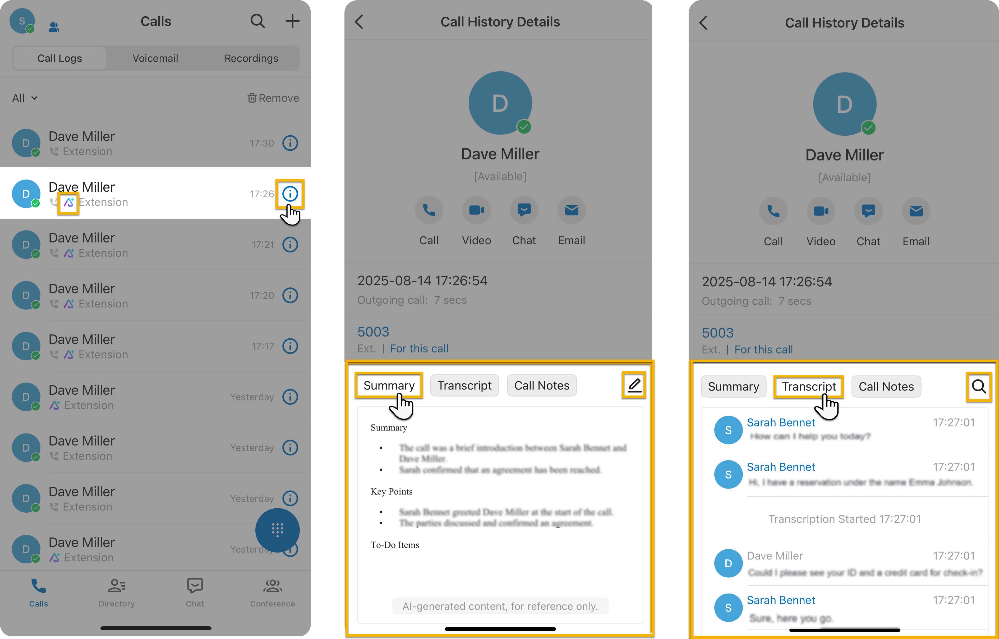

Transcribe a Call
AI-powered Call Transcription feature supports transcribing a call between two parties into readable texts, and generate a summary, helping you quickly summarize key points and identify to-dos.
Requirements
- PBX Server
-
- The firmware of the PBX server is 83.20.0.x or later.
- System administrator has enabled Call Transcription (Path: ) for your extension.
- Linkus Mobile Client
- The version of your Linkus Mobile Client meets the following
requirements:
- Linkus iOS Client: 5.17.x or later
- Linkus Android Client: 5.17.x or later
Procedure
- During an active call, turn on AI Transcription on
the call screen.Once enabled,
the extension will enable real-time transcription to record the conversation
content between both parties.Note: If Automatic Call Transcription is enabled, the transcription will start automatically whenever the extension joins a one on one call. For more information about how to enable Automatic Call Transcription, see Configure AI Call Transcription.
- Transcribe the call according to your need:
- Tap AI Transcription to open the AI Transcription panel, the real-time transcription will be presented here.
- Tap besides the search bar to open the
Language
panel.
In the Language panel, select the language for transcription as your needed.
Note:- When two extensions are in a call, if only one has AI Transcription enabled, the system will uses the transcription language configured by this one.
- If both extensions have AI Transcription enabled during a call, the language configured by the caller will be used. Otherwise, the first to enable AI Transcription decide the transcription language. Only the user whose language is selected can change it, the other party’s language option is hidden.
Tip: In the Search bar, you can search for the transcribed content you want.
Result
- During the call, the call audio will be transcribed in the AI transcription panel in real time.
-

-
After the call ends, you can review the summary and transcript in the call log; Calls that have been transcribed are marked with a
 icon.Note: You can edit the call summary, or search transcript according to your need.
icon.Note: You can edit the call summary, or search transcript according to your need.